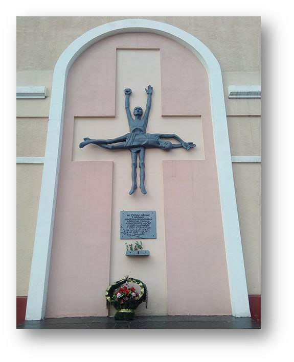

В сентябре 1941 г. командованием немецко-фашистских войск в северо-западной части г. Гомеля - в границах улиц Советской, Тельмана,
Портовой и переулка Военного был организован лагерь для советских военнопленных под названием «Центральный пересыльный лагерь
военнопленных №121» («Дулаг-121»), который просуществовал до 10.10.1943 г.
В лагере были уничтожены более 100 тысяч человек. Из архивных документов следует, что помимо военнопленных в лагере также
содержалось гражданское население, родственники партизан, в том числе и несовершеннолетние. Лагерь был создан на территории
завода «Двигатель революции» и в месте бывшей дислокации кавалерийской дивизии Красной Армии. Узники лагеря содержались в
бывших стойлах, переоборудованных под бараки. Их было семь.